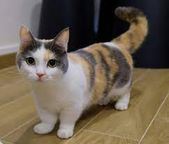

|  |
| Munchkinl |
BEHAVIOR
Munchkin cats are sweet and outgoing. Their curiosity and playfulness continue well into adulthood. The Munchkin cat breed is sociable and enjoys company. They can be taught to play fetch and to obey voice commands. While Munchkin cats can leap on to counter tops, many prefer to intelligently find an easier way up. They can also run fast, despite their short legs.
GROOMING
Munchkin cats may not have the flexibility to groom themselves as well as other cats do, so will need some assistance. This is especially true for those with those sporting long coats.
HEALTH PROBLEMS
The short leggedness of this breed is a deformity that is linked to bone and spinal problems, so it has not been welcomed by all cat associations. Dog breeds with similar conformation are known to have problems with arthritis and it is feared that some will occur in the Munchkin cat breed. As with all cats, Munchkins need vaccinations, parasite control and annual veterinary health checks.
NUTRITION
Every cat is unique and each has their own particular likes, dislikes, and needs when it comes to food. However, cats are carnivores and every cat must obtain 41 different and specific nutrients from their food. The proportion of these nutrients will vary depending on age, lifestyle and overall health, so it's not surprising that a growing, energetic kitten needs a different balance of nutrients in her diet than a less active senior cat. Other considerations to bear in mind are feeding the right quantity of food to maintain 'ideal body condition' in accordance with feeding guidelines and catering to individual preference regarding wet or dry food recipes.